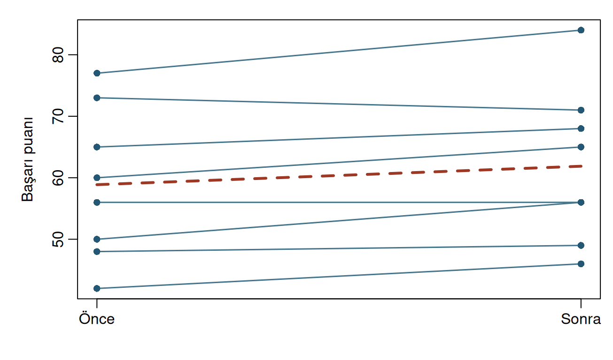
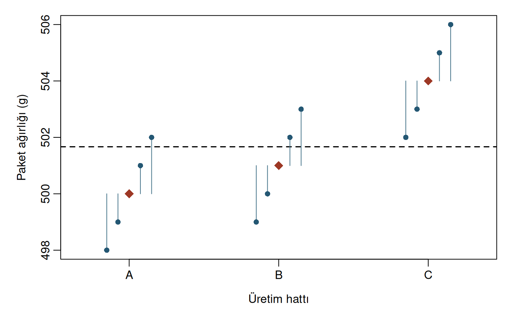

Bir kalite mühendisi, hattın hedefi olan 500 gramla gözlenen paket ortalamasını karşılaştırabilir. Aynı mühendis ikinci bir hat devreye girdiğinde iki hattın ortalamaları arasındaki farkı merak edebilir. Bir eğitim araştırmasında ise iki sütun, farklı kişilerin puanlarını değil, aynı kişilerin önceki ve sonraki ölçümlerini içerebilir. Üç durumda da bir fark hesaplarız. Ancak farkın ne kadar dalgalanacağını belirleyen veri üretim süreci değişir.
İşe ölçüm birimini, hedeflenen topluluğu ve farkın yönünü belirleyerek başlayın. Değişken sayısal olsa bile araştırma sorusu ortalama yerine örneğin ağır kusurların oranına veya tipik paketin medyanına ilişkin olabilir. Ortalama uygun bir hedefse referans değerin sabit mi, yoksa başka bir örneklemden tahmin edilmiş mi olduğunu sorun. İki ölçüm aynı birime aitse hangi kayıtların birbirine bağlı olduğu önemlidir. Bağımsız gruplarda büyüklükler ve yayılımlar, bir grubun farkın belirsizliğine ne kadar katkı verdiğini belirler.
Bölüm 34 ve Bölüm 33 bölümlerindeki karar ve aralık mantığını burada bu tasarımlara uygulayacağız. Okur bölüm sonunda tek grubun referansla farkını, iki bağımsız grubun farkını ve eşleştirilmiş farkı ayırabilecek, üç veya daha fazla bağımsız grup için ANOVA’nın neyi sınadığını açıklayabilecektir.
35.2 Tek örneklem: Bir hattı referansla karşılaştırmak
Bölüm 34 bölümündeki sekiz yapay paket ağırlığına dönelim. Paket gözlem birimidir. Hedef, aynı süreç koşullarında üretilen paketlerin ortalama ağırlığı \(\mu\) ve referans \(\mu_0=500\) gramdır. Her iki yöndeki sapma önemliyse \(H_0:\mu=\mu_0\) iddiasını \(H_1:\mu\ne\mu_0\) alternatifine karşı sınarız. \(\bar X\) örneklem ortalaması, \(S\) örneklem standart sapması, \(n\) paket sayısıdır. Standartlaştırılmış fark şöyledir:
\[
T=\frac{\bar X-\mu_0}{S/\sqrt n}.
\]
Pay gram cinsinden sapmadır. Payda da gram cinsindendir ve ortalamanın tahmini standart hatasıdır. Bölüm 33 bölümünde gördüğümüz gibi bağımsız normal ölçümlerde ortalama ile örneklem varyansı bağımsızdır. Varyans tahmininin \(n-1\) serbestlik derecesiyle ölçeklenmesi, \(H_0\) altında bu orana \(t_{n-1}\) dağılımını verir. Buradaki \(t_{n-1}\), \(n-1\) serbestlik dereceli Student dağılımını gösterir (Casella ve Berger 2002).
t df
Elle -1.207 7 0.267 -8.878 2.878
R -1.207 7 0.267 -8.878 2.878
İlk iki sütun test istatistiğini ve serbestlik derecesini, üçüncüsü çift yönlü p-değerini verir. Son iki sütun fark için %95 güven aralığıdır. R tek örneklem çıktısında doğrudan \(\mu\) için aralık verdiğinden, bu aralığın iki ucundan 500 çıkardık. Tahmin −3 gram ve fark aralığı yaklaşık −8,88 ile 2,88 gramdır. \(t\approx-1{,}207\) ve \(p\approx0{,}267\) olduğundan %5 düzeyinde ret çıkmaz. Bu veri, süreçte önemli sayılabilecek bir eksik dolumu da dışlamıyor. Üretim toleransı veya karar kuralı ayrıca belirtilmelidir. Sonuç bu yapay örneğin temsil ettiği bağımsız paket modeline aittir. Birbirine yakın zamanlarda çıkan paketler ortak bir arızadan etkileniyorsa bağımsızlık yeniden düşünülmelidir.
35.3 İki bağımsız hat: Farkın belirsizliği iki kaynaktan gelir
A ve B hatlarından farklı paketler seçelim. Hedef \(\Delta=\mu_1-\mu_2\), yani A ortalaması eksi B ortalamasıdır. \(\mu_i\), \(i=1,2\) numaralı hattın ortalaması, \(\bar X_i\) o hattın örneklem ortalaması, \(n_i\) paket sayısı ve \(\sigma_i^2\) paket ağırlıklarının anakütle varyansıdır. Her hat kendi içinde bağımsız ölçümler üretirse, Bölüm 32 bölümünden \(\bar X_i\) varyansı \(\sigma_i^2/n_i\) olur.
İki ortalama da değişebilir. A ortalamasının yüksek çıkması farkı artırır, B ortalamasının yüksek çıkması farkı azaltır. Buna rağmen yayılımlar toplanır. Çünkü B ortalamasına uygulanan eksi işareti kareli yayılımı değiştirmez ve gruplar bağımsızsa kovaryans sıfırdır:
Standart hata bu toplamın kareköküdür. Aynı malzeme partisinden eş zamanlı olarak seçilen paketler veya seri bağımlılığı tasarımı değiştirir. Bu durumda kovaryansı sıfır saymak ya da her hattın tamamını bağımsız kabul etmek için ek gerekçe gerekir.
35.3.1 Welch yöntemi
Anakütle varyanslarını bilmiyorsak, \(s_1^2\) ve \(s_2^2\) örneklem varyanslarını kullanırız. \(v_1=s_1^2/n_1\) ve \(v_2=s_2^2/n_2\) her hattın tahmini katkısı olsun. \(H_0:\Delta=0\) için Welch istatistiği ve yaklaşık serbestlik derecesi şöyledir:
Welch–Satterthwaite yaklaşımı, iki ayrı varyans tahmininin toplamını benzer dalgalanmaya sahip tek bir ölçekle temsil eder. Bu ölçeğe karşılık gelen \(\nu\), gerçek gözlem sayısı değil etkin serbestlik derecesidir. Tam sayı olması gerekmez. Belirsizliğin çoğu küçük bir örneklemden geliyorsa, \(\nu\) o örneklemin serbestlik derecesine yaklaşabilir. Aralık, gözlenen farkın çevresine \(\sqrt{v_1+v_2}\) ile \(\nu\) serbestlik dereceli uygun t kantilinin çarpımını ekleyip çıkararak elde edilir (Welch 1947; Casella ve Berger 2002).
Welch, bağımsız iki grup için iyi bir başlangıçtır. İki yayılımı zorla eşitlemeden her grubun belirsizlik katkısını taşır. Küçük ve çok çarpık örneklerde veya bağımlı ölçümlerde otomatik bir güvence sağlamaz. R’nin bağımsız iki örneklemde t.test() varsayılanı var.equal = FALSE olduğu için Welch’tir.
35.3.2 Ortak varyans varsayılırsa Student yöntemi
İki hattın aynı anakütle varyansına sahip olduğunu gerekçelendirebiliyorsak iki örneklem varyansı birleştirilebilir. Her örnekte kendi ortalaması hesaplandığı için \(i\) grubunda \(n_i-1\) serbestlik derecesi kalır. Kareli sapma toplamı bu nedenle \((n_i-1)s_i^2\) değeridir. İki toplamı ortak serbestlik derecesine bölersek havuzlanmış varyans \(s_p^2\) elde edilir:
Bağımsız normal ortak varyans modelinde referans dağılımının serbestlik derecesi \(n_1+n_2-2\) olur. Küçük grup daha değişkense havuzlama büyük ve daha dar grubun varyansına fazla ağırlık verebilir. Oysa küçük değişken grubun katkısı, \(s_i^2/n_i\) nedeniyle farkın gerçek belirsizliğinde büyük olabilir. Bu yanlış birleşim aralığı gereğinden daraltabilir. Ters eşleşme aralığı fazla genişletebilir. Dengeli büyüklüklerde ve benzer varyanslarda iki yöntem çoğu zaman yakın sonuç verir. Bir varyans ön testinde ret çıkmaması eşitliği doğrulamaz. Üstelik ön testin sonucuna göre yöntem değiştirmek, hata özellikleri ayrı değerlendirilmesi gereken birleşik bir prosedür kurar.
Aşağıdaki iki örneklem öğretim için, her biri kendi normal dağılımından bağımsız olarak üretiliyor. Küçük ve daha değişken A hattı için model ortalaması 502, standart sapması 7 gram. B için model ortalaması 498, standart sapması 2 gram. Bunlar bilinen yapay veri üretim değerleridir. Analizde yayılımı yine örneklerden tahmin ediyoruz. var.equal = TRUE ikinci yöntemin ortak varyans varsayımını etkinleştirir.
Tahmini A−B farkı 3,79 gramdır. Welch için standart hata yaklaşık 2,68 gram, etkin serbestlik derecesi 11,33 ve p-değeri 0,184’tür. %95 aralık −2,09–9,67 gramdır. Havuzlanmış Student hesabında serbestlik derecesi 42, p-değeri 0,030 ve aralık 0,39–7,19 gramdır. Fark aynı paketlerden hesaplandığından iki yöntemde aynı kalır. Welch’te A’nın daha büyük yayılımı ayrı bir standart hata katkısı olarak korunur. Student’ta B’nin daha fazla gözlemi ortak varyansı aşağı çeker. Bu örnekte Student aralığı daha dardır. Gerçek veri üretimi eşit varyans içermediğinden bu dar aralık daha iyi ölçüm yapıldığı anlamına gelmez. Welch aralığında sıfıra yakın ve üretim için anlamlı olabilecek pozitif farkları ayrı değerlendirin. Sonucun yönü A eksi B’ye göredir. Gerçek hatlarda çizelge, ürün türü veya bakım geçmişi farklıysa bir farkı tek başına makineye bağlayamayız.
35.4 Eşleştirilmiş ölçüm: Bir kişinin değişimini izlemek
Bir eğitimde aynı katılımcılara önce ve sonra başarı testi uygulansın. Önceki yüksek puanlı kişilerin sonraki puanları da yüksek kalabilir. Burada iki bağımsız puan listesi yerine kişiler arasında bağımsız, kişi içinde bağlantılı ölçümler vardır. \(i\) kişisinin önce ve sonra puanları sırasıyla \(Y_{i,\mathrm{önce}}\) ve \(Y_{i,\mathrm{sonra}}\) olsun. Farkı şöyle tanımlarız:
Hedef \(\mu_D\), bu kişi içi farkların anakütle ortalamasıdır. \(\bar D\) gözlenen farkların ortalaması, \(s_D\) farkların örneklem standart sapması, \(n\) tam çiftlerin sayısı, \(\mu_{D,0}\) referans farktır. Değişim yok iddiasında \(\mu_{D,0}=0\) alırız:
\[
T=\frac{\bar D-\mu_{D,0}}{s_D/\sqrt n}.
\]
Bu, farklara uygulanan tek örneklem t-testidir. Normal model gerekçesi önceki ve sonraki puanların ayrı biçimlerine değil, farkların dağılımına ve kişiler arasındaki bağımsızlığa ilişkindir.
Neden iki bağımsız grup gibi hesap yapmıyoruz? \(Y_s\) sonraki, \(Y_o\) önceki puanı göstersin. Ortalamaları çıkarıp kare açıldığında iki varyansın yanında işareti negatif bir çapraz terim kalır:
\(\operatorname{Cov}\), iki puanın kendi ortalamalarından sapmalarının çarpımının beklenen değeridir. Kişi içi kovaryans pozitifse bu terim, iki puanın ayrı yayılımlarının toplamını azaltır. Örneğin bir kişinin yüksek başlangıç başarısı iki ölçümü de yukarı taşıyorsa fark almak o ortak düzeyi kısmen giderir. Negatif kovaryansta farkın varyansı artabilir. Eşleştirme daha küçük standart hatayı her koşulda garanti etmez (Diez vd. 2019).
t df
Fark 3 2.722456 7 0.02966017 0.394311 5.605689
Eşli 3 2.722456 7 0.02966017 0.394311 5.605689
İki çağrı da aynı sekiz farkı kullanır. Çıktı sırasıyla ortalama değişimi, t istatistiğini, serbestlik derecesini, p-değerini ve aralık uçlarını verir. Ortalama değişim 3 puandır. \(t\) yaklaşık 2,72, serbestlik derecesi 7, p-değeri 0,030 ve %95 aralık 0,39–5,61 puandır. Aralık, her kişinin aynı ölçüm birimindeki sonraki eksi önceki farkını hedefler. İki gruba ait ayrı aralıkların örtüşmesi, bu fark aralığını vermez.
eski <-par(mar =c(3.4, 4.3, 1.1, 0.7), mgp =c(2.3, 0.6, 0))plot(c(1, 2), range(c(once, sonra)), type ="n", xaxt ="n",xlab ="", ylab ="Başarı puanı")axis(1, at =c(1, 2), labels =c("Önce", "Sonra"))segments(1, once, 2, sonra, col ="#47758B", lwd =1.5)points(rep(c(1, 2), each =length(once)), c(once, sonra), pch =16,col ="#245773")lines(c(1, 2), c(mean(once), mean(sonra)), lwd =3, lty =2, col ="#9D3825")par(eski)

Şekil 35.1: Sekiz yapay katılımcının önce ve sonra puanları. Çizgiler aynı kişiye ait ölçümleri bağlar. Kalın kesikli çizgi iki zamanın ortalamalarını gösterir.
Şekil 35.1, bazı kişilerin puanının düştüğünü veya değişmediğini de gösterir. Ortalama artış her bireyin kazanımını ifade etmez. Eğitimden önce ve sonra ölçülen fark, tek başına değişimin eğitimden kaynaklandığını da göstermez. Alıştırma etkisi, zamanla gelişme veya aynı dönemdeki başka uygulamalar da fark yaratabilir. Öğrenci eşlerini kimlikle kurmak gerekir. Bir puan eksikse o kişiden tam fark hesaplanamaz. Eksikliğin hangi kişilerde oluştuğu, tam çiftlerin neyi temsil ettiğini etkiler.
35.5 Üç bağımsız hat: ANOVA’nın sorduğu soru
Üç hattı aynı denetimde karşılaştırırken üç çift için ayrı ayrı %5 test yapmak aile düzeyinde yanlış ret olasılığını artırabilir. Aynı hattı paylaşan çiftlerin testleri genellikle bağımlıdır. Bölüm 34 bölümündeki bağımsız test çarpımı bu duruma aynen uygulanmaz. Tek yönlü varyans analizi (ANOVA) önce ortak bir soru sorar. \(k\) grup sayısı ve \(\mu_i\) grubun anakütle ortalaması ise:
\[
H_0:\quad \mu_1=\mu_2=\cdots=\mu_k.
\]
Alternatif bu eşitliğin en az bir yerde bozulmasıdır. Örneğin yalnız C hattı farklı, A ile B aynı olabilir. Testin fikri, grup merkezlerinin birbirinden uzaklığını, her grubun kendi içindeki gürültüyle karşılaştırmaktır.
35.5.1 Kareler toplamından F oranına
\(y_{ij}\), \(i\) grubundaki \(j\) ölçümü olsun. \(n_i\) grubun büyüklüğü, \(N=\sum_i n_i\) toplam ölçüm sayısıdır. \(\bar y_i\) grubun ortalaması, \(\bar y\) bütün ölçümlerin ortak ortalamasıdır. Gruplar eşit büyüklükte değilse \(\bar y\), grup ortalamalarının \(n_i\) ile ağırlıklandırılmış ortalamasıdır. Her gözlemin genel merkezden farkı iki adıma ayrılır:
Kareleri açıp bütün ölçümler üzerinde toplarız. Bir grubun çapraz terimi, o grubun merkezinin genel merkezden farkının bir sabit katıyla \(\sum_j(y_{ij}-\bar y_i)\) çarpımıdır. Son toplam sıfırdır. Böylece üç kareler toplamı, \(SS\), şu şekilde tanımlanır:
Grup ortalaması çıkarıldığında her grupta sapmaların toplamı sıfırdır. Bu yüzden grup içinde toplam \(\sum_i(n_i-1)=N-k\) serbestlik derecesi kalır. Grup ortalamalarının genel merkezden ağırlıklı sapmaları da sıfır toplamlıdır. Grup arasında \(k-1\) serbestlik derecesi vardır. Kareler toplamlarını serbestlik derecelerine bölerek ortalama kareleri, \(MS\), elde ederiz:
Bağımsız normal hatalar ve ortak pozitif hata varyansı altında \(H_0\) doğruysa iki ortalama kare aynı varyansın ayrı tahminleridir. Normal modelde birbirinden bağımsız ölçekli ki-kare bileşenlerinden gelirler. Oran bu nedenle \(k-1\) pay ve \(N-k\) payda serbestlik dereceli F dağılımını izler. Ortalamalar ayrıştığında gruplar arası ortalama kareye sistematik fark da eklenebilir. Büyük F, bu gürültü düzeyinde grubun merkezlerinin beklenenden uzak olduğunu gösterir. p-değeri F referans dağılımının sağ kuyruğudur (Casella ve Berger 2002).
35.5.2 Elle hesap ve R ile doğrulama
Üç hattın dengeli bir pilot denetimini temsil eden yeni, elle kurulmuş yapay ölçümler kullanalım. Burada her satır ayrı bir pakettir. Bu küçük tablo matematiği izlemek içindir. Klasik F ve Tukey sonuçlarını yorumlarken bağımsız normal ortak varyans modelini öğretim varsayımı olarak kullanıyoruz.
pilot <-data.frame(hat =factor(rep(c("A", "B", "C"), each =5)),gram =c(498, 499, 500, 501, 502,499, 500, 501, 502, 503,502, 503, 504, 505, 506))genel <-mean(pilot$gram)grup_ort <-tapply(pilot$gram, pilot$hat, mean)merkez <-unname(grup_ort[pilot$hat])N <-nrow(pilot)k <-nlevels(pilot$hat)ss_toplam <-sum((pilot$gram - genel)^2)ss_ic <-sum((pilot$gram - merkez)^2)ss_arasi <-sum((merkez - genel)^2)F_elle <- (ss_arasi / (k -1)) / (ss_ic / (N - k))p_F <-pf(F_elle, k -1, N - k, lower.tail =FALSE)uyum <-aov(gram ~ hat, data = pilot)c(toplam = ss_toplam, ic = ss_ic, arasi = ss_arasi, F = F_elle, p = p_F)
toplam ic arasi F p
73.333333333 30.000000000 43.333333333 8.666666667 0.004687259
summary(uyum)
Df Sum Sq Mean Sq F value Pr(>F)
hat 2 43.33 21.67 8.667 0.00469 **
Residuals 12 30.00 2.50
---
Signif. codes: 0 '***' 0.001 '**' 0.01 '*' 0.05 '.' 0.1 ' ' 1
ab_pilot <-subset(pilot, hat !="C", drop =TRUE)F_ab <-anova(aov(gram ~ hat, data = ab_pilot))[1, "F value"]t_ab <-t.test(gram ~ hat, data = ab_pilot, var.equal =TRUE)$statisticc(F_iki_grup = F_ab, t_kare =unname(t_ab^2))
F_iki_grup t_kare
1 1
\(SS_{\mathrm{iç}}=30\), \(SS_{\mathrm{arası}}=43{,}33\) ve \(SS_{\mathrm{toplam}}=73{,}33\) g² değerlerini verir. Ortalamalar 500, 501 ve 504 gramdır. \(F\approx8{,}67\), serbestlik dereceleri 2 ve 12, p-değeri yaklaşık 0,0047’dir. Aynı veri, aynı ortak varyans modeli ve iki grup ile klasik F değeri, iki taraflı havuzlanmış t istatistiğinin karesidir. Bu eşitlik A ve B’nin pilot alt kümesinde doğrulanır. Karşılaştırma, başka tasarımlara veya kullanılan tüm testlere otomatik olarak taşınmaz.
eski <-par(mar =c(3.6, 4.3, 1.1, 0.8), mgp =c(2.3, 0.6, 0))konum <-as.integer(pilot$hat) +rep(seq(-0.15, 0.15, length.out =5), 3)plot(konum, pilot$gram, type ="n", xaxt ="n", xlab ="Üretim hattı",ylab ="Paket ağırlığı (g)", xlim =c(0.65, 3.35))axis(1, at =1:3, labels =levels(pilot$hat))abline(h = genel, lty =2, lwd =1.6)segments(konum, merkez, konum, pilot$gram, col ="#47758B")points(konum, pilot$gram, pch =16, col ="#245773")points(1:3, grup_ort, pch =18, cex =1.7, col ="#9D3825")par(eski)

Şekil 35.2: Yapay pilotta noktalar paketler, baklavalar hat ortalamalarıdır. İnce düşey çizgiler paketlerin kendi hat ortalamalarına uzaklığını, kesikli yatay çizgi genel ortalamayı gösterir.
Şekil 35.2 üzerinde gözlemden baklavaya olan mesafe grup içi katkıyı, baklavanın kesikli çizgiden uzaklığı gruplar arası katkıyı anlatır. İkinci katkı grup büyüklüğüyle ağırlıklandırılır. F testi baklavaların hepsinin farklı olduğunu veya hangi çiftin ayrıştığını söylemez.
35.5.3 Genel testten farkların raporuna
Klasik ANOVA için normal biçim, her grubun kendi ortalaması etrafındaki hatalara aittir. Üç ayrı ortalama varsa ham ağırlıkların birleşik histogramı çok tepeli olabilir. Bu durum tek başına varsayım ihlali değildir. Varyanslar farklıysa oneway.test(..., var.equal = FALSE) ile Welch ANOVA düşünülebilir. Aynı genel eşitlik sorusunu sınar. Grupları ayrı varyanslarla ağırlıklandırır ve düzeltilmiş bir F başvurusu kullanır. Bağımsızlığı ve anlamlı bir hata modeli gerekliliğini korur.
Klasik model makulse, Tukey HSD bir çift ailesindeki bütün ikili farklar için ayarlanmış p-değerleri ve eşzamanlı güven aralıkları verir. Dengeli ve bağımsız normal ortak varyans modelinde bu aralıklar aile olarak yorumlanır. Tek tek %95 aralıklar vermek, bütün çiftlerin aynı anda kapsanmasını %95 düzeyinde kontrol etmez. Tukey’nin dengeli tasarım gerekçesi ile R’nin ılımlı dengesizlikteki uyarlaması, belirgin farklı varyansları düzeltmez.
oneway.test(gram ~ hat, data = pilot, var.equal =FALSE)
One-way analysis of means (not assuming equal variances)
data: gram and hat
F = 8, num df = 2, denom df = 8, p-value = 0.01235
Aynı pilot veride Welch ANOVA yaklaşık \(F=8\), pay ve payda dereceleri 2 ve 8, p-değeri 0,0123 verir. Klasik sonuçtan farklı referans kullanır. Tukey tablosunda C-A işareti, C ortalamasından A ortalamasının çıkarıldığını gösterir. Bu pilot örnekte C−A farkı 4 gramdır ve eşzamanlı aralığı sıfırı dışarıda bırakır. A ile B arasında eşitlik kanıtlanmış olmaz. Bu adımda önemli olan, yalnız ayarlanmış p-değerlerini sıralamak yerine hangi büyüklükteki gram farklarının verilerle uyumlu olduğunu ve ailenin nasıl tanımlandığını göstermektir.
35.6 Varsayımları değerlendirmek ve etkiyi raporlamak
Araştırma tasarımı bağımsızlık hakkında ilk kanıttır. Bir Q–Q grafiği aynı üretim partisinden gelen paketlerin bağlantısını gösteremez. Ölçümler sıralı toplanmışsa süreçte kayma, kümelenme ve bir paketin birden fazla kez ölçülmesi incelenmelidir. Grup büyüklükleri çok farklıysa, varyans farkının hangi grupla eşleştiğine bakın. Ham noktalar ve grup özetleri asimetriyi ve sıra dışı değerleri görünür kılar. Klasik ANOVA için grup ortalamaları çıkarıldıktan sonra artıkların Q–Q grafiği ve grup bazında yayılımı, hata modelinin nasıl çalıştığını incelemek için yararlıdır. Eşli analizde ise aynı incelemeyi farklar üzerinden yaparız.
Küçük örneklemde grafikler veya Shapiro–Wilk ve Levene gibi testler sınırlı bilgi taşır. Büyük bir p-değeri varsayımı doğrulamaz. Çok büyük örneklerde önemsiz bir şekil sapması bile küçük p-değeri üretebilir. Belirgin bir uç gözlem varsa önce veri kaydını ve süreci inceleyin. Yalnız p-değerini iyileştirmek için paketi çıkarma kararı vermeyin. Bağımlılık için uygun tasarım modeli, ağır çarpıklık için sağlam özet veya uygun başka bir yöntem gerekebilir. Sıra temelli yöntemler 5.8’de ele alınacaktır ve her biri otomatik olarak aynı ortalama farkını sınamaz.
Tek grup için ortalama eksi referans, bağımsız iki grup için A eksi B, eşli tasarım için kişilerin sonraki eksi önceki farklarının ortalaması raporlanır. Gram ya da puan, genellikle etkinin en anlaşılır ölçüsüdür. Standartlaştırılmış bir etki karşılaştırılacaksa kullanılan ölçek belirtilmelidir. Örneğin tek grupta gözlem standart sapması, eşli tasarımda farkların standart sapması ve iki grupta ortak veya ayrı yayılım farklı sorulara karşılık gelir. Küçük p-değeri, farkın üretim toleransını aştığını garanti etmez. Güven aralığının toleransa göre konumu, tahminin hangi pratik sonuçlarla uyumlu olduğunu gösterir.
35.7 Benzetim: Tip I hata varyans ve büyüklüğe nasıl bağlı?
Ortalaması aynı olan iki bağımsız normal süreçten \(n_1=12\) ve \(n_2=36\) paket alalım. Her durumda iki test de gerçek sıfır farkını %5 düzeyinde sınayacak. İlk senaryoda küçük grupta standart sapma 8, büyük grupta 2 gram. İkinci senaryoda yayılımlar tersine çevriliyor. Sabit tohumla her koşul için 20.000 bağımsız çift örneklem üretiyoruz. Aynı tekrar üzerinde Welch ve Student hesaplarını uygulamak, ret oranlarını ortak yapay veride karşılaştırmamızı sağlar.
set.seed(5702)tekrar <-20000n_kucuk <-12n_buyuk <-36alfa <-0.05satir_ozeti <-function(n, sigma) { x <-matrix(rnorm(tekrar * n, mean =500, sd = sigma), nrow = tekrar) m <-rowMeans(x)list(ort = m, var =rowSums((x - m)^2) / (n -1))}ret_orani <-function(sigma1, sigma2) { a <-satir_ozeti(n_kucuk, sigma1) b <-satir_ozeti(n_buyuk, sigma2) delta <- a$ort - b$ort v1 <- a$var / n_kucuk v2 <- b$var / n_buyuk nu <- (v1 + v2)^2/ (v1^2/ (n_kucuk -1) + v2^2/ (n_buyuk -1)) ortak <- ((n_kucuk -1) * a$var + (n_buyuk -1) * b$var) / (n_kucuk + n_buyuk -2) tw <- delta /sqrt(v1 + v2) tp <- delta /sqrt(ortak * (1/ n_kucuk +1/ n_buyuk))c(Welch =mean(2*pt(-abs(tw), nu) <= alfa),Student =mean(2*pt(-abs(tp), n_kucuk + n_buyuk -2) <= alfa))}retler <-rbind("Küçük grup daha değişken"=ret_orani(8, 2),"Büyük grup daha değişken"=ret_orani(2, 8))knitr::kable(retler, digits =4)
Welch
Student
Küçük grup daha değişken
0.0488
0.2369
Büyük grup daha değişken
0.0482
0.0032
Her iki senaryoda da ret bir Tip I hatadır. Student yönteminde küçük ve çok değişken grup varken oran %5’in üstüne, büyük ve çok değişken grup varken altına gidebilir. Bunun nedeni ortalama farkının gerçek varyansının \(\sigma_1^2/n_1+\sigma_2^2/n_2\) olmasıdır. Havuzlanmış yöntem, daha çok serbestlik derecesi olan grubun yayılımını fazla temsil eder. Bu tohumla küçük grup daha değişkenken Welch %4,88, Student %23,69 ret verdi. Ters durumda oranlar %4,82 ve %0,32 oldu. Kuramsal bir kontrol de yapılabilir. Normal modelde örneklem ortalamalarından bağımsız olan iki örneklem varyansının ki-kare dağılımları üzerinden ret olasılıklarını sayısal olarak ortalamak, ilk durumda Welch için %5,03 ve Student için %23,58 verir. İkinci durumda aynı sırayla %4,99 ve %0,25 bulunur. Bu benzetim iki belirli normal senaryoya aittir. Örneğin %5 civarındaki bir ret oranında 20.000 tekrarın Monte Carlo standart hatası yaklaşık 0,15 yüzde puandır. Aynı büyüklük ve varyans eşleşmesi korunmadan bu sayıları başka tasarımlara taşımayız.
Şekil 35.3: Eşit ortalamalı iki normal grupta Student ve Welch testlerinin benzetim ret oranları. Düşey kesikli çizgi nominal %5 düzeyidir.
Şekil 35.3 üzerindeki Student noktalarının yön değiştirmesi, eşit varyans varsayımı bozulduğunda hatanın her zaman aynı yönde olmadığını gösterir. Hangi grubun daha değişken olduğunu örneklem büyüklükleriyle birlikte okumak gerekir.
35.8 Egzersizler
Kolay. Aynı kişilerin iki ölçümü, iki farklı hat ve bir hat ile sabit referans için analiz birimini ve uygun ortalama farkını tanımlayın.
Kolay. Sekiz paketlik örnekte −3 gram fark ve yaklaşık −8,88 ile 2,88 gram aralığı nasıl raporlanır? Neden 500 gramın doğrulandığı sonucu çıkmaz?
Orta. Bağımsız iki grupta \(s_1=8\), \(n_1=16\), \(s_2=3\), \(n_2=36\). Farkın Welch standart hatasını ve etkin serbestlik derecesini bulun. Hangi grup daha çok belirsizlik getiriyor?
Orta. Önce puanları 50, 60, 70 ve sonra puanları 53, 61, 76 olsun. Kişi farklarını, ortalamasını ve farkların örneklem varyansını hesaplayın. Pozitif kovaryans ile ayrı varyansları toplamak arasındaki farkı açıklayın.
Orta. Pilot ANOVA’da 500, 501 ve 504 gramlık grup ortalamaları için genel ortalamayı ve gruplar arası kareler toplamını yeniden hesaplayın. Her grupta beş ölçüm var. Grup içi toplam 30 ise F nedir?
Orta. Üç hattın birleşik histogramı iki tepeli ve her birinin kendi artıkları yaklaşık simetrik olsun. Bu bilgi tek başına klasik ANOVA’yı geçersiz kılar mı? Hangi ek koşulları araştırırsınız?
Zor. Küçük grubun varyansı büyük olduğunda havuzlanmış yöntemle Welch neden farklı standart hatalar verebilir? Varyans ve büyüklük eşleşmesi tersine döndüğünde Tip I hata neden aynı yönde değişmeyebilir?
Zor. Genel F testi küçük p-değeri verdiğinde hangi ortalamaların farklı olduğu belirlenmiş midir? Tukey aralıklarını hangi hata ailesi ve model altında yorumlarsınız?
Zor. 0,2 gramlık ortalama farkın %95 aralığı 0,1–0,3 gram ve üretim açısından önemli sayılan fark 2 gram olsun. İstatistiksel karar ve üretim kararı hakkında ayrı ayrı ne söyleyebilirsiniz? Gözlemsel tasarımda nedensellik için neye ihtiyacınız var?
35.9 Egzersiz çözümleri
1. Aynı kişinin iki ölçümünde birim kişidir ve fark sonraki eksi önceki puandır. İki hatta birim pakettir ve hedef iki hat ortalamasının farkıdır. Tek hatta yine paket ölçülür, fakat karşılaştırma örneklem ortalamasıyla belirsizliği olmayan referans arasındadır.
2. “Sekiz yapay pakette tahmin edilen fark −3 gramdır. Bağımsız normal ölçüm modeliyle fark için %95 t aralığı yaklaşık −8,88–2,88 gramdır.” Aralık sıfırı da önemli olabilecek negatif sapmaları da içerir. Reddetmeme, ortalamanın kesin olarak 500 olduğunu veya pratik eşdeğerliği göstermez.
3. Katkılar \(64/16=4\) ve \(9/36=0{,}25\) olduğundan standart hata \(\sqrt{4{,}25}\), yaklaşık 2,062 birimdir. Welch–Satterthwaite hesabıyla \(\nu\) yaklaşık 16,91’dır. Belirsizliğin çoğu daha küçük ve daha değişken birinci gruptan gelir. Bu nedenle etkin serbestlik derecesi 15’e, toplam 50’den daha yakındır.
4. Farklar 3, 1 ve 6, ortalama \(10/3\) puandır. Örneklem fark varyansı \(19/3\), yaklaşık 6,33 puan karedir. Önce ve sonra puanları kişi içinde birlikte yükseldiğinden kovaryans pozitiftir. İki ayrı varyansın toplamından kovaryansın iki katını çıkarmak, farkların gerçekten gözlenen saçılımını verir.
5. Genel ortalama \(1505/3\), yaklaşık 501,67 gramdır. Her grubun genel merkezden kareli sapmasını beşle çarpıp topladığımızda grup arası toplam \(130/3\) g² olur. Grup içi ortalama kare \(30/12=2{,}5\) g²’dir. Grup arası ortalama kare \(65/3\) g² olduğundan F yaklaşık 8,67’dir.
6. Ortalamalar ayrıştığında birleşik histogramda birden fazla tepe olabilir. Hat bazındaki hataların biçimi hedeflenir. Önce süreç ve ölçümlerin bağımsızlığı, sonra grup yayılımları, uç değerler ve Q–Q görünümü incelenir. Belirgin farklı varyanslar varsa Welch ANOVA düşünülebilir.
7. Ortak varyans büyük grubun kareli sapmalarına daha çok ağırlık verir. Büyük grup daha az değişkense havuz fazla dar kalabilir. Farkın gerçek varyansında ise küçük grubun yüksek varyansı, küçük örneklem böleniyle daha da önem kazanır. Eşleşmeyi ters çevirmek havuzun bu kez gereğinden büyük standart hata vermesine yol açabilir.
8. Genel test, ortak ortalama iddiasına ilişkin kanıt verir. Hangi çiftin ayrıştığını belirlemek için çiftlere ilişkin aralıklar gerekir. Tukey’nin aile kontrolü, tanımlanan bütün ikili farklar ve klasik bağımsız, normal, ortak varyans modeli içindir. Koşullar değiştiğinde aynı aralıkları koşulsuz kullanmayız.
9. Sıfır aralığın dışında olduğundan, karşılık gelen çift yönlü testte ortalama farkı için ret kararı çıkar. Aralığın tamamı 2 gramın altında kaldığından büyüklük üretim ölçütüne göre önemsiz olabilir. Bu yorum güven aralığının kapsama dayanağına bağlıdır. Nedensellik, grupların oluşumu ve başka etkenleri dışlamaya yarayan bir tasarım veya açık varsayımlar gerektirir.
35.10 Bölüm özeti
Ortalama karşılaştırmasında önce hangi farkın hedeflendiği ve hangi gözlemlerin bağlantılı olduğu belirlenir. Welch her grubun varyansını ayrı kullanır, Student gerekçeli bir ortak varyans modeline dayanır. Eşleştirilmiş test aynı kişinin farkını analiz eder. ANOVA, birden çok grubun merkezlerinin ayrışmasını grup içi yayılımla karşılaştırır. Etki tahmini, aralık, p-değeri ve tasarım sınırları birlikte raporlandığında sonucun bilimsel anlamı değerlendirilebilir.
Casella, George, ve Roger L. Berger. 2002. Statistical Inference. 2. bs. Duxbury/Thomson Learning.
Diez, David, Mine Çetinkaya-Rundel, ve Christopher D. Barr. 2019. OpenIntro Statistics. 4. bs. OpenIntro. https://www.openintro.org/book/os/.
Welch, B. L. 1947. “The Generalization of Student’s Problem when Several Different Population Variances Are Involved”. Biometrika 34 (1–2): 28-35. https://doi.org/10.1093/biomet/34.1-2.28.